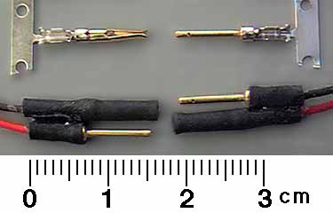

It has been a while since I added a tip to this section of the site.
I expect you will agree this one was worth the wait.
- Thayer

|
One of the big frustrations for flyers of small FF or RC electric models is connectors. Common problems are size, weight, cost and availability.
In response to these issues, Darren Bos of San Francisco has developed the connector shown above. It is easily made from Radio Shack components. The parts needed are found in the kits for assembling a D-Subminiature 25 pin connector. These are most commonly used as IBM printer cable connectors. You will need both a male and female kit. Darren used the crimp type connectors, and the part numbers below are for those kits. There is a solder type kit as well. The large cable connector housings are not needed and get tossed. Heat shrink tubing is used to protect the connection to the leads, as well as to insulate the female sockets. Cya holds a male and female pair together to form a single two lead polarized connector.
| |||||||||||||||||||||
|
Weight: less than 1 gram per pair
|
|
| |||||||||||||||||||
return to